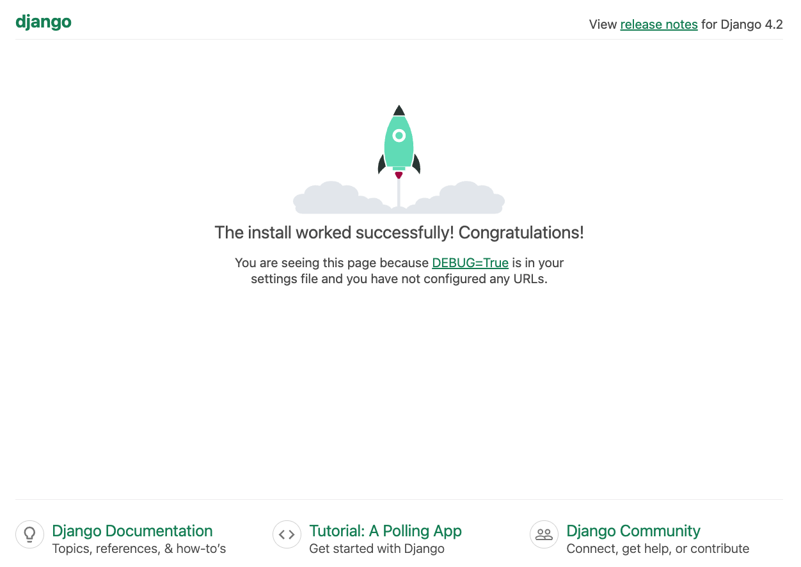
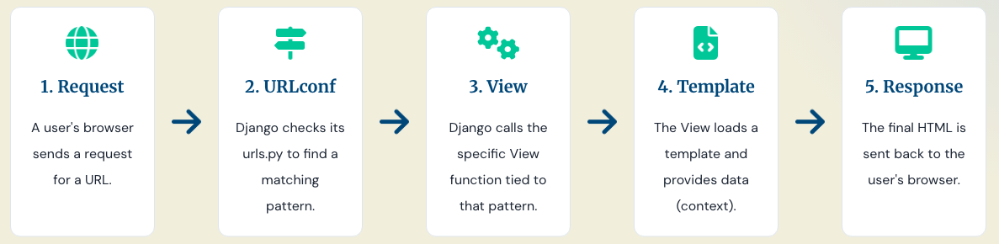

Setup a Project
Getting Started with Django¶
Setting up a Virtual Environment¶
- Install the latest version of Django using pip, the Python package manager
pip install django
- Create and activate a virtual environment to isolate your Django project dependencies
python3 -m venv myenv
source myenv/bin/activate # On Windows use `myenv\Scripts\activate`
This creates and activates a virtual environment named myenv.
This makes other commands available only within this isolated environment.
Verify the installation by checking the Django version
django-admin --version
e.g. django-admin command-line utility is used to create and manage Django projects and applications.
Starting a Project¶
Run the following command to create a new Django project named geetshala:
django-admin startproject geetshala
manage.pyfile - command-line utility for managing the projectsettings.pyfile - configuration settings for the projecturls.pyfile - URL routing for the projectwsgi.pyfile - entry point for WSGI-compatible web servers to serve the project
Running the Development Server¶
python manage.py runserver
django-admin runserver

Default SQLite Database¶
- Django uses SQLite as the default database as a lightweight, file-based database that requires minimal setup
- suitable for development and small-scale applications
Mini-Challenge: Where is the configuration for SQLite Database?
The SQLite database file is typically located in the root directory of your Django project and is named db.sqlite3 by default.
Let the World Know What You Have Built!
bash
git init
git add .
git commit -m "Initial commit"
Dissecting the Django Project Structure¶
geetshala/
manage.py
geetshala/
__init__.py
settings.py
urls.py
wsgi.py
asgi.py
- The outer
geetshala/directory is the project root directory manage.py- A command-line utility that lets you interact with this Django project in various ways- The inner
geetshala/directory is the actual Python package for your project. Its name is the Python package name you will need to use to import anything inside it (e.g.geetshala.settings). __init__.py- An empty file that tells Python that this directory should be considered a Python package.settings.py- Settings/configuration for this Django projecturls.py- The URL declarations for this Django project; a "table of contents" of your Django-powered sitewsgi.py- An entry-point for WSGI-compatible web servers to serve your projectasgi.py- An entry-point for ASGI-compatible web servers to serve your project
Project and App Structure¶
Architectural Design Pattern¶
The MTV Architecture¶
-
Model-Template-View architecture, a variation of the traditional MVC (Model-View-Controller) pattern
-
Model(M) - Data layer, handles data and database interactions
Artists, Albums, Songs
- View(V) - Business logic layer, processes user requests, interacts with the model, and selects the appropriate template for rendering
Displaying a list of songs, particular song, processing a form submission
- Template(T) - Presentation layer, manages the user interface and presentation logic
Displaying different components for same song for logged-in users and anonymous users
Don't Repeat Yourself (DRY) Principle¶
- Every piece of knowledge must have a single, unambiguous, authoritative representation within a system
- A software development principle aimed at reducing repetition of code and promoting reusability
🏗️ Example of DRY in Django¶
- Reusable components like models, views, and templates
- creating a single template for Artist information and reusing it across different views
- Template inheritance - define a base template and extend it for specific pages with common elements
MVC Design Pattern¶
- A software design pattern for developing web applications
- three main components: Model, View, and Controller
Dynamic Web Pages¶
- static web pages - same content for every user
- dynamic web pages - content changes based on user interactions, preferences, or other factors
Dynamic Content¶
- generated on-the-fly based on user requests and interactions
- personalized user experiences, real-time data updates, and interactive features
-
examples - social media feeds, e-commerce product recommendations, news websites
-
View - processes user requests, retrieves data from the model, and selects the appropriate template for rendering dynamic content
How Django Processes a Request¶

- Example of a user requesting a web page from a Django application
/songs

Mini-Challenge: What happens when an invalid URL is requested?
When an invalid URL is requested, Django returns a 404 Not Found error page, indicating that the requested resource could not be found on the server.
Mini-Challenge: What is the sequence of steps Django takes to process a request?
- User sends a request to
/songs - Django's URL dispatcher matches the URL to a view function
- The view function retrieves data from the model (e.g., list of songs)
- The view selects a template and passes the data to it
- The template renders the HTML with dynamic content
- Django sends the rendered HTML back to the user's browser
Mini-Challenge: Resolve this issue - The requested URL /songs was not found on this server.
- App Registration: Ensure that the app containing the
/songsview is registered in theINSTALLED_APPSlist insettings.py. - URL Configuration: Verify that the URL pattern for
/songsis correctly defined in theurls.pyfile of the project or app. - View Function: Check that the view function handling the
/songsrequest is properly implemented and returns a valid HTTP response.
Mapping URLs to Views¶
- URL routing system maps incoming URL requests to specific view functions or classes
- URL patterns defined in the
urls.pyfile
Uniform Resource Locator - URLs¶
- fundamental mechanism for locating resources on the web
- A reference (an address) to a resource on the Internet
- structured string that specifies the location of a resource and the protocol used to access it
Structure of a URL:
scheme://domain:port/path?query_string#fragment_id
| Part | Description | Example |
|---|---|---|
| Scheme | The protocol to use (e.g., HTTP, HTTPS). | https:// |
| Hostname | The domain name or IP address of the server. | www.example.com |
| Port | The network port (optional; 80 for HTTP, 443 for HTTPS). | :8000 (in development) |
| Path | The specific location of the resource on the server. | /products/detail/15/ |
| Query | Additional parameters passed to the server (key-value pairs). | ?sort=price&limit=10 |
| Fragment | An internal section of the resource (not sent to server). | #section-header |
Example In a Django application, the part you primarily define is the Path:
URL: https://127.0.0.1:8000/songs/2025/
Path: /songs/2025/
URLconfs and Loose Coupling¶
- URLconfs - URL configurations that map URL patterns to view functions or classes
- loose coupling between URL structure and view logic
URLconfs (The Map) A URLconf is a Python list named urlpatterns containing path() definitions.
geetshala/urls.py(Project-level URLconf)
# Project-level URLconf: routes to 'admin/' and the 'songs' app
from django.contrib import admin
from django.urls import path, include
from . import views
urlpatterns = [
path('admin/', admin.site.urls),
path('songs/', include('songs.urls')), # Include URLs from the songs app
]
songs/urls.py (App-level URLconf)
# App-level URLconf: routes to specific views within the songs app
from django.urls import path
from . import views
urlpatterns = [
path('', views.song_list, name='song_list'), # e.g., /songs/
path('<int:song_id>/', views.song_detail, name='song_detail'), # e.g., /songs/1/
]
Loose Coupling¶
- a design principle that promotes separation of concerns
- the
urlpatternsinurls.pyfiles are decoupled from the actual view logic - allows for easier maintenance and scalability of the application
Benefit Example
-
/songs/123/can be routed to a view functionmaintenance-mode.htmlthat displays a maintenance message without changing the URL structure. -
/songs/123/can be changed to/geet/123/to display the same song details without modifying the underlying view logic.
Dynamic URLs¶
- URLs that contain variable parts
- allows a single URL pattern in
urls.pyto handle multiple requests with different parameters
# songs/urls.py
from django.urls import path
from . import views
urlpatterns = [
# Captures an integer (int:song_id)
path('<int:song_id>/', views.song_detail, name='detail'),
]
How it works
When a user visits /songs/543/hello-world/, Django extracts 543 as song_id , passing it to the song_detail view function. And calls the view like this: song_detail(request, song_id=543).
# songs/views.py
from django.shortcuts import render
from django.http import HttpResponse
def song_detail(request, song_id):
# The arguments (song_id) are passed directly from the URLconf
response_text = f"You are viewing Song ID: {song_id}"
return HttpResponse(response_text)
Django’s Pretty Error¶
- pretty error pages during development
- detailed error messages with stack traces and debugging information
- project is in DEBUG mode (
DEBUG = Trueinsettings.py)
Key Features of the Pretty Error Page
- Stack Trace: shows the sequence of function calls that led to the error
- Code Context: provides a snippet of code around the line where the error occurred, helping to identify the issue
- Variable Inspection: allows inspection of local variables at the point of error
- Request Information: displays details about the HTTP request that caused the error, including headers and GET/POST data
- Settings Overview: shows relevant settings from
settings.pythat might affect the error
Mini-Challenge: What happens in PRODUCTION?
- ⚠️ Security Note: Sensitive Information Might Be Exposed
- Set
DEBUG = Falsein production server. Django will send a generic HTTP 500 error page to the user and log the detailed error internally.
❓ 404 Errors (Page Not Found)¶
- occurs when a user requests a URL that does not exist in the application
- Django returns a 404 Not Found error page
- customizable 404 error page to provide a better user experience
Handling 404 Errors in Django
- URL Resolution: Ensure that the requested URL is correctly defined in the
urls.pyfile - View Logic: Verify that the view function handling the request is properly implemented and returns a valid HTTP response
- Custom 404 Page: Create a custom 404 error template (e.g.,
404.html) and configure Django to use it by settinghandler404in the project'surls.pyfile
# geetshala/urls.py
from django.contrib import admin
from django.urls import path
from django.conf.urls import handler404
from . import views
urlpatterns = [
path('admin/', admin.site.urls),
]
handler404 = 'geetshala.views.custom_404_view'
# geetshala/views.py
from django.http import HttpResponse
def custom_404_view(request, exception):
return HttpResponse("Custom 404 - Trying to render a page", status=404)
The Django Template System¶
- DTS is Django's built-in mechanism for generating HTML, XML, or other text-based formats
- separates the presentation layer(how the data looks) from the business logic(how the data is processed) adhering to the MVT architecture
🎨 Using the Template System¶
- objective of the having a separation of data logic from presentation.
- creating template files (usually .html) that contain static HTML mixed with dynamic placeholders using tags, variables, and filters.
Template Hierarchy and Location
- default directory for templates is
templates/within each app directory - alternatively, define a global
templates/directory at the project level and configure it insettings.py
# mysite/settings.py
TEMPLATES = [
{
...
'DIRS': [BASE_DIR / 'templates'], # Points to project_root/templates/
...
},
]
🔖 Basic Template Tags and Filters¶
- Variables({{...}}): placeholders for dynamic content, enclosed in double curly braces
{{ }}
<h1>{{ song.title }}</h1>
<p>Artist: {{ song.artist.name }}</p>
<p>Comment: {{ song.comments.1 }}</p>
- Template Tags: control flow, loops, and conditional logic
| Tag | Purpose | Example |
|---|---|---|
{% if ... %} |
Conditional statements. | {% if user.is_authenticated %} |
{% for ... %} |
Loops over iterable objects. | {% for song in songs %} |
{% csrf_token %} |
Security tag, required in all POST forms. | <form method="post">{% csrf_token %}</form> |
{% url 'name' arg1 %} |
Looks up a URL by its defined name, avoiding hardcoding. | <a href="{% url 'song:detail' song.id %}">...</a> |
How to use it in templates:
{% if user.is_authenticated %}
<p>Welcome, {{ user.username }}!</p>
{% else %}
<p>Please log in.</p>
{% endif %}
{% for song in songs %}
<h2>{{ song.title }}</h2>
<p>Artist: {{ song.artist.name }}</p>
{% endfor %}
Mini-Challenge: Set up Link to Details page in List of Songs and to List of Songs in Details Page
Use the {% url %} tag to create a link to the song detail page dynamically.
html
<a href="{% url 'song_detail' song.geet_id %}">View Details</a>
-
Template Filters: modify the display of variables (e.g., formatting dates, converting text to uppercase)
-
Filters are applied using the pipe
|symbol. -
Filter - date, default, length, safe
-
{{ song.release_date | date:"F j, Y" }} {{ name | default:"Anonymous" }}{{ comments | length }}{{ html_content | safe }}
<p>Current date: {{ current_date|date:"F j, Y" }}</p>
<p>Uppercase Name: {{ user.username|upper }}</p>
Templates in Views(context of MVT)¶
Mini-Challenge: What is the role of View?
- processes user requests
- retrieves data from the Model
- instructs the Django to render the appropriate Template using that data
-
The
render()function -
combines a given template with a context dictionary and returns an HttpResponse object with that rendered text.
- easiest way to generate HTML responses using templates
- signature:
render(request, template_name, context=None, content_type=None, status=None, using=None)
from django.shortcuts import render
def song_list(request):
songs = Song.objects.all() # Retrieve all songs from the database
context = {'songs': songs} # Context dictionary to pass to the template
return render(request, 'songs/song_list.html', context) # Render the template with context
-
Manual Rendering(Under the Hood)
-
simple or non-HTML responses, you might manually load and render templates using
loaderandHttpResponse
from django.http import HttpResponse
from django.template import loader
def song_list(request):
songs = Song.objects.all() # Retrieve all songs from the database
template = loader.get_template('songs/song_list.html') # Load the template
context = {'songs': songs} # Context dictionary to pass to the template
rendered_template = template.render(context, request) # Render the template with context
return HttpResponse(rendered_template) # Return an HttpResponse with the rendered content
📥 Template Loading¶
- process of locating and loading correct template file requested by the view
For render(request, 'songs/song_list.html', context)
- Check
TEMPLATESsetting insettings.pyfor directories to search - Search in app-specific
templates/directories ifAPP_DIRSis `True - Load the template file if found, else raise
TemplateDoesNotExisterror
Configuration in settings.py
# geetshala/settings.py
TEMPLATES = [
{
...
'APP_DIRS': True, # Enable app-level templates directory
...
},
]
🧱 Template Inheritance.¶
-
allows you to create a base template that defines the base tempalte containing common elements(header, footer, navigation) and then have child templates override or fill in specific blocks of content
-
Don't Repeat Yourself (DRY) principle
<!-- base.html -->
<!DOCTYPE html>
<html>
<head>
<title>{% block title %} Welcome to Geetshala{% endblock %}</title>
</head>
<body>
<header>
<h1>Welcome to Geetshala</h1>
</header>
<nav>
<!-- Navigation links -->
</nav>
<main>
{% block content %}
<!-- Default content can go here -->
{% endblock %}
</main>
<footer>
<p>© 2024 Geetshala</p>
</footer>
</body>
</html>
<!-- child.html -->
{% extends "base.html" %} {% block title %}Home - Geetshala{% endblock %} {%
block content %}
<h2>List of Songs</h2>
<p>Top Songs</p>
{% endblock %}
Next Steps:: Model, Administration Site, and Form Processing¶
Setting Up a Separate Database¶
Setting Up MySQL Database with Django
Install the MySQL Adapter for Django
bash
pip install mysqlclient